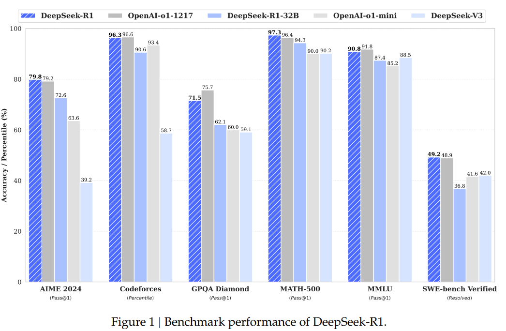
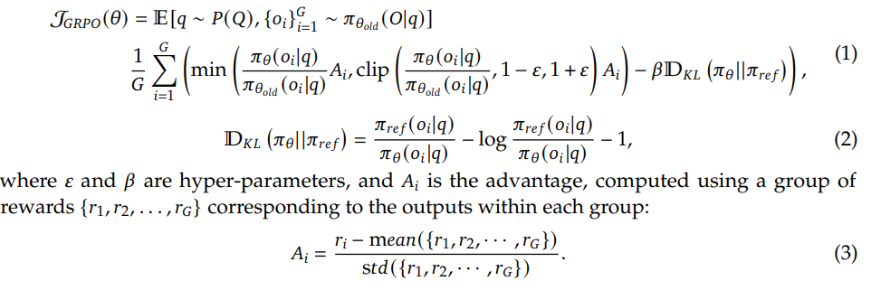
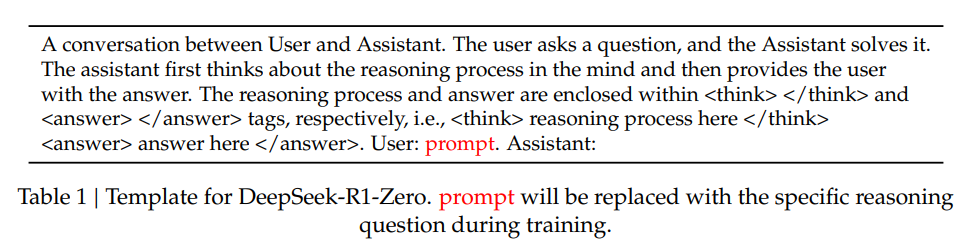
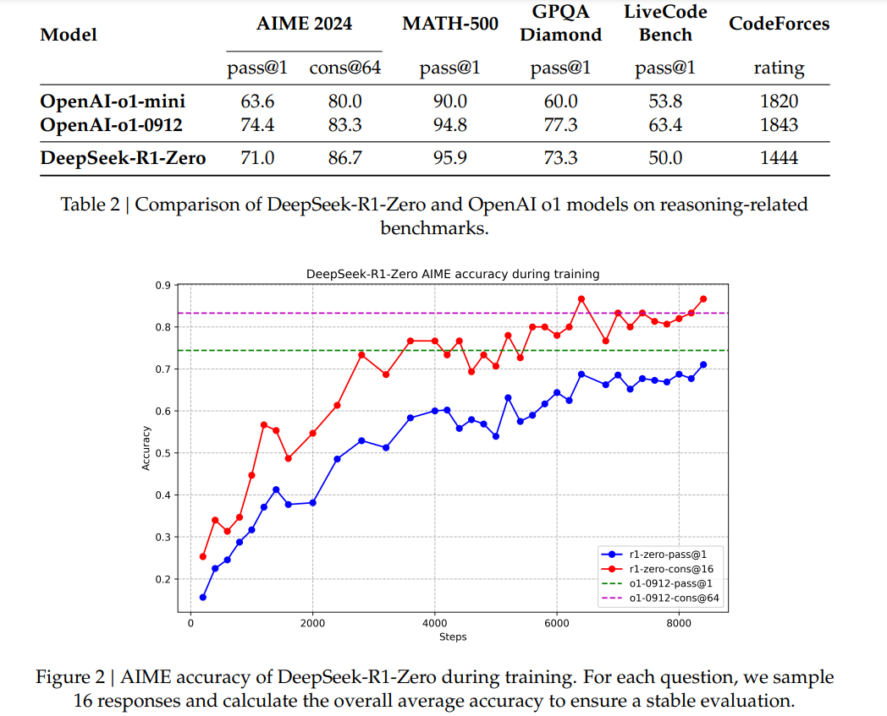
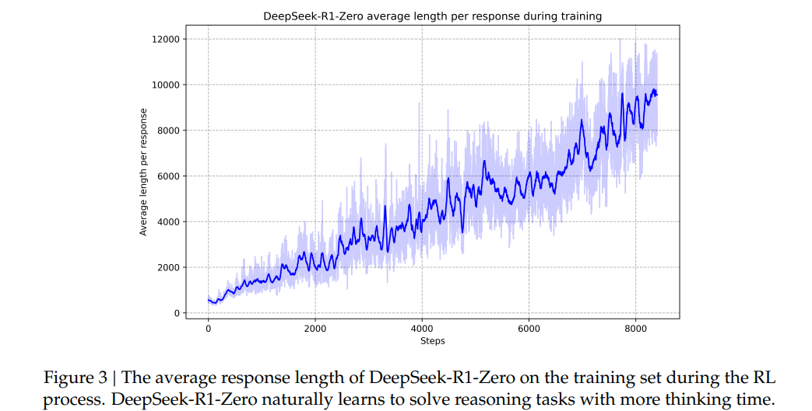
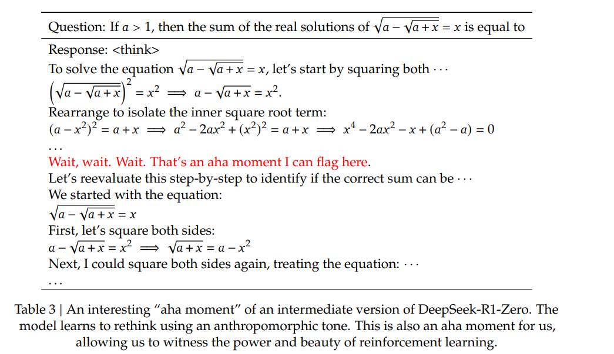

大模型太流行了，开始学习学习，纯粹是好奇。就从论文开始吧，不会什么学就是了，计算机科学无所畏惧
DeepSeek-R1: 通过强化学习激励LLMs的推理能力
摘要
我们推出我们的第一代推理模型，DeepSeek-R1-Zero 和 DeepSeek-R1.
DeepSeek-R1-Zero，一个通过大规模强化学习，在初步步骤中没有经过监督微调（SFT）训练出来的模型，展示了显著的推理能力，通过强化学习，DeepSeek-R1-Zero 自然地出现了许多的强大的且引人注目的推理行为。但是它也遇到了一些挑战，如（结果）可读性差和语言混乱。
为了解决这些问题，并进一步提升推理性能，我们引入了 DeepSeek-R1，它采用了多阶段训练和强化学习（RL）之前的冷启动数据。DeepSeek-R1 在推理任务中达到了和 OpenAI-o1-1217 相当的推理水平。为了支持研究社区，我们开源了 DeepSeek-R1-Zero、DeepSeek-R1 和 六个密集模型（与之相对的是“sparse models”，即稀疏模型，参数较少、计算效率更高。）分别是(1.5B, 7B, 8B, 14B, 32B, 70B)。这些模型是基于 Qwen 和 Llama 架构，从 DeepSeek-R1 蒸馏而来的。

开源 YYDS !
1. Introduction
近年来，大型语言模型（LLMs）一直在快速迭代和演变（Anthropic, 2024；Google, 2024；OpenAI, 2024a），不断缩短实现人工通用智能（AGI）的差距。最近，训练后处理已成为完整训练流程的重要组成部分。研究表明，这种方法能够提高推理任务的准确率，符合社会价值观，并且能适应用户的偏好，同时其计算资源的需求相较于预训练来说相对较低。
在推理能力方面，OpenAI的o1系列模型（OpenAI, 2024b）是第一个通过延长思考链(Chain-of-Thought) 推理过程来实现推理时间缩放的技术。这种方法在数学、编码和科学推理等各类推理任务中取得了显著提升。然而，有效测试时间缩放的挑战仍然是研究界尚未解决的问题。先前的一些工作已经探讨了多种方法来解决这一问题，包括基于过程的奖励模型（Lightmanet al., 2023; Uesato et al., 2022; Wang et al., 2023）、强化学习（Kumar et al., 2024）以及蒙特卡洛树搜索和束搜索算法（Feng et al., 2024; Trinhet al., 2024; Xin et al., 2024）。然而，这些方法中没有一种在通用推理性能上能够达到与OpenAI的o1系列模型相媲美的水平。
确实，这个我自己之前在llama3.1中，尝试引导多步思考并反思，多使用 token, 结果就能更准确一点点。现在是先生成思考链，类似于先用模型生成 Prompt, 然后根据 Prompt 再总结结果。
在本文中，我们迈出了向使用纯粹的强化学习（RL）来提升语言模型推理能力的第一步。我们的目标是探索大型语言模型在无需任何监督数据的情况下发展推理能力的潜力，并专注于它们通过纯粹的强化学习过程实现自我进化。具体而言，我们选择使用 DeepSeek-V3-Base 作为基础模型，并采用GRPO框架（Shao et al., 2024）来增强模型的推理能力。在这一过程中，DeepSeek-R1-Zero 自然而然地展现出了许多强大且有趣的推理行为。经过数千次强化学习步骤后，DeepSeek-R1-Zero 在推理基准测试中表现出色。例如，在AIME 2024 测试中，其pass@1准确率从15.6%提升至71.0%，而通过多数投票法进一步提高到86.7%，达到了OpenAI的o1-0912版本的表现。
然而，在实际应用中，DeepSeek-R1-Zero 面临着可读性和语言混杂等挑战。为了解决这些问题并进一步提升推理性能，我们引入了DeepSeek-R1模型。该模型采用了少量冷启动数据和多阶段训练流程。具体来说，我们首先收集数千个冷启动数据，用于微调DeepSeek-V3-Base模型。接着，我们执行类似于DeepSeek-R1-Zero的基于推理的强化学习。当在强化学习过程中接近收敛时，我们通过在强化学习的检查点上进行拒绝采样来生成新的策略冻结测试数据，并结合DeepSeek-V3在写作、事实问答和自我认知等领域的监督数据，然后重新训练DeepSeek-V3-Base模型。在完成新的数据微调后，该检查点经历了一个额外的强化学习过程，考虑了来自所有情景的提示词。这些步骤完成后，我们获得了一个名为DeepSeek-R1的检查点，其性能与OpenAI-o1-1217相当。
我们进一步探索了从DeepSeek-R1蒸馏到更小的密集模型的过程。使用Qwen2.5-32B（Qwen，2024b）作为基础模型时，直接从DeepSeek-R1进行蒸馏的表现优于在该基础上应用强化学习。这表明，大型基础模型发现的推理模式对于提升推理能力至关重要。我们开源了蒸馏版的Qwen和Llama (Dubeyet al., 2024) 系列。值得注意的是，我们的14B参数蒸馏模型在与当前最佳开源模型QwQ-32B-Preview（Qwen，2024a）相比时表现出色，差距显著；而32B和70B的蒸馏模型则在密集型模型中于推理基准测试上创下了新纪录。
1.1. Contributions
后训练：在基础模型上进行大规模强化学习
- 我们直接将强化学习（RL）应用于基础模型，而不依赖于监督微调（SFT）作为前期步骤。这种方法使模型能够探索链式思维（Chain of Thought, CoT），从而解决复杂问题，并最终开发出了DeepSeek-R1-Zero。DeepSeek-R1-Zero 展示了自我验证、反思以及生成长链式思维（long CoTs）等能力，标志着研究社区的一个重要里程碑。值得注意的是，这是第一个公开的研究，证明通过强化学习（RL），可以激励大型语言模型的推理能力，而无需监督微调（SFT）。这项突破为未来在这个领域的进展铺平了道路。
- 我们介绍了一套方法（pipeline），用于开发DeepSeek-R1。我们的流程（pipeline）包含两个强化学习阶段，旨在发现改进的推理模式并使其符合人类偏好，同时还包含两个监督微调阶段，作为模型推理能力和非推理能力的基础。我们认为，这个流程（pipeline）将通过创建更好的模型而造福整个行业。
蒸馏：小型模型也可以很强大
- 我们证明了大型模型的推理模式可以通过蒸馏迁移到小型模型中，与通过强化学习直接在小型模型上发现的推理模式相比，其表现更好。开源的 DeepSeek-R1 以及它的 API 将会造福研究社区，使他们能够在未来蒸馏出更好的小型模型。
- 我们使用 DeepSeek-R1 生成的推理数据，对几个在研究社区中被广泛使用的稠密模型进行了微调。评估结果显示，通过蒸馏得到的小型稠密模型在基准测试中表现非常出色。DeepSeekR1-Distill-Qwen-7B 在 AIME 2024 上实现了 55.5% 的成绩，超过了 QwQ-32B-Preview。此外，DeepSeek-R1-Distill-Qwen-32B 在 AIME 2024 上获得了 72.6%，在 MATH-500 上达到了 94.3%，在LiveCodeBench 上达到了 57.2%。这些结果显著超越了之前的开源模型，并且可以与 o1-mini 相媲美。我们基于 Qwen2.5 和 Llama3 系列，向社区开源了 1.5B、7B、8B、14B、32B 和 70B 的蒸馏检查点。
1.2. Summary of Evaluation Results
-
Reasoning tasks: DeepSeek-R1 在 AIME 2024 上取得了 79.8% 的 Pass@1 分数，略微超过了 OpenAI-o1-1217。在 MATH-500 上，它达到了令人印象深刻的分数，与 OpenAI-o1-1217 表现相当，并且显著超越了其他模型。在编程相关的任务中，DeepSeek-R1 展示了专家级水平的代码竞赛能力，因为它在 Codeforces 上取得了 2,029 的 ELO 等级分数，在比赛中超过了 96.3% 的人类参赛者。对于工程相关的任务，DeepSeek-R1 表现略优于 DeepSeek-V3，这有助于开发者在实际任务中更好地完成工作。
-
Knowledge: 在 MMLU、MMLU-Pro 和 GPQA Diamond 这样的基准测试中，DeepSeek-R1 取得了卓越的成绩，显著超越了 DeepSeek-V3。具体来说，在 MMLU 上，DeepSeek-R1 的得分为 90.8%，在 MMLU-Pro 上为 84.0%，在 GPQA Diamond 上为 71.5%。虽然这些基准测试中其表现略低于 OpenAI-o1-1217，但它超过了其他闭源模型，在教育任务方面展现了其竞争优势。在事实基准 SimpleQA 上，DeepSeek-R1 的表现优于 DeepSeek-V3，证明了它在处理基于事实的查询方面的能力。类似的趋势也出现在 OpenAI-o1 上，它在该基准测试中超越了 40% 的其他模型。
-
Others: DeepSeek-R1 在创意写作、通用问题回答、编辑、总结等广泛任务中表现出色。它在 AlpacaEval 2.0 上实现了长度控制的胜率（win-rate）为87.6%，在 ArenaHard 上的胜率为92.3%，展示了其对非考试导向查询的智能
处理能力。此外，DeepSeek-R1 在需要长上下文理解的任务中表现尤为突出，在相关基准测试中远超 DeepSeek-V3。
2. Approach
2.1. Overview
先前的工作主要依赖于大量监督数据来提升模型性能。在这项研究中，我们证明了通过大规模强化学习（Reinforcement Learning, RL）可以显著增强模型的推理能力，即使在没有监督微调（Supervised Fine-Tuning, SFT）作为冷启动的情况下。此外，加入少量的冷启动数据也可以进一步提高性能。以下部分我们将介绍：
- DeepSeek-R1-Zero，直接将RL应用于基础模型而不使用任何SFT数据；
- DeepSeek-R1，从经过数千个长链式思维（Chain-of-Thought, CoT）示例微调的检查开始应用RL
- 将DeepSeek-R1的推理能力蒸馏到小而密集的模型中。
2.2. DeepSeek-R1-Zero: Reinforcement Learning on the Base Model
强化学习在推理任务中表现出显著的有效性，这在我们的先前工作中得到了证实（Shao et al., 2024; Wang et al., 2023）。然而，这些工作严重依赖于监督数据的收集，而这需要耗费大量时间和资源。在本节中，我们将探索大型语言模型（LLMs）在没有监督数据的情况下发展推理能力的潜力，重点关注它们通过纯粹的强化学习过程实现自我进化的能力。我们首先简要概述我们的强化学习算法，然后展示一些令人兴奋的结果，并希望这些内容能为研究社区提供宝贵的见解。
2.2.1. Reinforcement Learning Algorithm
Group Relative Policy Optimization 为了节省强化学习（RL）的训练成本，我们采用了组相对策略优化（Group Relative Policy Optimization, GRPO）（Shao et al., 2024）。该方法摒弃了传统强化学习中与策略模型规模相当的评判模型（Critic Model），转而通过组内输出的群体评分直接估计基线（Baseline）。其核心优化过程如下：


反正大概意思就是摈弃了传统的评判模型，换了种方法，结果是节省了 RL 的训练成本。嗯！后面解释了下，思考链，呃，
prompt放在了<think>标签内。所以所谓的思考链果然是prompt。
2.2.2. Reward Modeling
为了训练 DeepSeek-R1-Zero 模型，我们采用了基于规则的奖励系统，该系统主要由两种类型的奖励组成：即时反馈奖励（Immediate Feedback Rewards） 和 延迟反馈奖励（Delayed Feedback Rewards）。这两种奖励类型结合使用，为模型提供了多维度的学习信号，帮助其在不同时间尺度上优化行为。
- Accuracy rewards: 准确性奖励模型评估回答是否正确。例如，在涉及有确定结果的数学问题时，该模型需要以指定格式（如放在一个框内）提供最终答案，从而实现可靠、基于规则的正确性验证。同样地，对于 LeetCode 问题，可以使用编译器根据预定义测试用例生成反馈。
- Format rewards: 除了准确性奖励模型外，我们还采用了格式奖励模型，要求模型将其思考过程置于
<think>和</think>标签之间。
我们不采用结果或过程神经奖励模型，因为在开发DeepSeek-R1-Zero时，我们发现，在大规模强化学习过程中，神经奖励模型可能面临奖励漏洞问题。此外，重新训练奖励模型需要额外的训练资源，并且会增加整个训练流程的复杂性。
2.2.3. Training Template
为了训练DeepSeek-R1-Zero，我们首先设计了一个简单的模板，引导基础模型遵循我们的特定指令。如表1所示，这个模板要求DeepSeek-R1-Zero先生成推理过程，然后再输出最终答案。我们有意将约束限制在这一结构化的格式上，避免引入任何与内容相关联的偏差——例如不强制要求反思性推理（reflective reasoning），也不特意推广某种特定的问题解决策略——以确保我们能够准确观察模型在强化学习过程中自然发展的状态。
2.2.4. Performance, Self-evolution Process and Aha Moment of DeepSeek-R1-Zero
Performance of DeepSeek-R1-Zero 图2展示了DeepSeek-R1-Zero在2024年AIME基准测试中，在强化学习（RL）训练过程中的性能轨迹。正如所示，随着RL训练的推进，DeepSeek-R1-Zero的表现稳步且持续地提升。值得注意的是，在AIME 2024上的平均pass@1评分有显著提高，从初始的15.6%大幅提升到71.0%，达到了与OpenAI-o1-0912相当的水平。这一重大改进凸显了我们的RL算法在优化模型性能方面随着时间推移的有效性。
表2提供了DeepSeek-R1-Zero与OpenAI的o1-0912模型在多个推理相关基准测试上的对比分析。研究结果表明，强化学习赋予了模型能力。

DeepSeek-R1-Zero无需任何有监督微调数据即可实现稳健的推理能力。这是一个值得注意的成就，因为它突显了模型仅通过强化学习就能有效学习和概括的能力。此外，通过应用多数投票法，DeepSeek-R1-Zero的性能可以进一步提升。例如，在AIME基准测试中使用多数投票法时，DeepSeek-R1-Zero的表现从71.0%跃升至86.7%，从而超过了OpenAI-o1-0912的表现。无论是否应用多数投票，DeepSeek-R1-Zero都能实现如此具有竞争力的性能，突显了其强大的基础能力和在推理任务中进一步发展的潜力。
Self-evolution Process of DeepSeek-R1-Zero DeepSeek-R1-Zero的自进化过程是一个引人入胜的展示，说明RL如何能够驱动模型自主提升其推理能力。通过直接从基础模型启动RL，我们可以在不受监督微调阶段影响的情况下，密切观察模型的进展。这种方法提供了一个清晰的视角，展示模型随时间如何演变，特别是在处理复杂推理任务方面的能力。

如图3所示，DeepSeek-R1-Zero的思考时间在整个训练过程中呈现出一致性的提升。这种改进并非来自外部调整，而是源于模型内部的自然发展。通过利用扩展测试时间计算，DeepSeek-R1-Zero自然而然地获得了解决日益复杂的推理任务的能力。这种计算涵盖了生成数百到数千个推理令牌的过程，使模型能够更深入地探索和优化其思维过程。
这种自我演进的一个最引人注目的方面，是随着测试时间计算的增加而自然涌现出的复杂行为。例如，模型会“反思”——即重新审视和评估其之前的步骤，并探索解决问题的替代方法。这些行为并不是人为编写的，而是源于模型与强化学习环境之间的交互作用。这种自发性的发展显著提升了DeepSeek-R1-Zero的推理能力，使其能够更高效、更准确地应对更具挑战性的任务。
Aha Moment of DeepSeek-R1-Zero 在DeepSeek-R1-Zero的训练过程中，一个特别引人注目的现象是“顿悟时刻”（aha moment）的发生。正如表3所示，这个时刻出现在模型的中间版本中。在此阶段，DeepSeek-R1-Zero学会了通过重新评估其初始方法来为问
题分配更多思考时间。这一行为不仅是模型推理能力逐渐增强的证明，也是强化学习能够产生意外和复杂结果的一个迷人的例证。
这个时刻不仅对模型来说是一个“顿悟时刻”，对观察其行为的研究人员也是如此。这突显了强化学习的力量与美丽：我们不需要明确地教导模型如何解决问题，而是只需提供适当的激励，它就能自主发展出高级的问题解决策略。这种“顿悟时刻”强有力地提醒着我们，强化学习在解锁人工系统中新水平智能的潜力，为未来更自主、更适应性的模型铺平了道路。

Drawback of DeepSeek-R1-Zero 尽管DeepSeek-R1-Zero表现出强大的推理能力和自主发展出意外且强大的推理行为，但它仍然面临一些问题。例如，DeepSeek-R1-Zero在诸如可读性差和语言混合等问题上存在挑战。为了使推理过程更具可读性，并与开放社区分享它们，我们探索了一种名为DeepSeek-R1的方法，该方法利用强化学习并结合以人为友好的冷启动数据。
2.3. DeepSeek-R1: Reinforcement Learning with Cold Start
受 DeepSeek-R1-Zero 令人鼓舞的结果启发，两个自然问题浮现出来：
- 通过整合少量高质量数据作为冷启动，推理性能能否进一步提升或收敛速度能否加快？
- 我们如何能够训练一个用户友好的模型，使其不仅产生清晰且连贯的Chain of Thought（CoT），还能展示强大的通用能力？
为了解决这些问题，我们设计了一个用于训练DeepSeek-R1的流程。该流程由四个阶段组成，概述如下。
2.3.1. Cold Start
与DeepSeek-R1-Zero不同，为了避免基于基础模型的RL训练中早期冷启动阶段的不稳定问题，我们为DeepSeek-R1构建并收集了少量长Chain of Thought（CoT）数据，用于微调模型作为初始的强化学习动作者。为了收集此类数据，我们探索了几种方法：使用带有长CoT示例的few-shot提示、直接提示模型生成详细且包含反思和验证的回答、收集DeepSeek-R1-Zero以可读格式输出，并通过人类注释者的后期处理来优化结果。
在本研究中，我们收集了数千个冷启动数据来微调DeepSeek-V3-Base作为强化学习的起点。与DeepSeek-R1-Zero相比，冷启动数据的优势包括：
- 可读性：DeepSeek-R1-Zero的一个关键限制是其内容通常不适合阅读。响应可能会混合使用多种语言或缺乏突出用户答案的markdown格式。相比之下，在创建用于DeepSeek-R1的冷启动数据时，我们设计了一种可读性模式，包括在每个响应末尾添加摘要，并过滤掉不可读友好的响应。在这里，我们将输出格式定义为
|special_token|<reasoning_process>|special_token|<summary>，其中推理过程是查询的 Chain of Thought（CoT），而总结用于概括推理结果。 - 潜力：通过人类先验精心设计冷启动数据模式，我们观察到与DeepSeek-R1-Zero相比性能更佳。我们认为，迭代训练是推理模型更好的方式。
2.3.2. Reasoning-oriented Reinforcement Learning
在对DeepSeek-V3-Base进行冷启动数据微调后，我们采用与DeepSeek-R1-Zero相同的大型强化学习训练流程。这一阶段的重点在于提升模型的推理能力，特别是在编码、数学、科学和逻辑推理等需要大量推理的任务中表现更佳，这些任务涉及定义明确且有清晰解决方案的问题。在训练过程中，我们注意到CoT（Chain of Thought）经常出现语言混合现象，尤其是在强化学习提示涉及多种语言时。为解决语言混合问题，我们在强化学习训练中引入了语言一致性奖励，计算方式为目标语言单词在CoT中的比例。尽管消融实验表明这种对齐会导致模型性能略有下降，但该奖励与人类偏好一致，提高了可读性。最后，我们将推理任务的准确性与语言一致性的奖励直接相加，形成最终奖励。然后，我们对微调后的模型进行强化学习训练，直到其在推理任务上达到收敛。
2.3.3. Rejection Sampling and Supervised Fine-Tuning
当以推理为主的强化学习收敛后，我们利用生成的检查点来收集监督微调（SFT）数据，用于下一回合的训练。与初始冷启动数据主要关注推理不同，这一阶段的数据涵盖了其他领域的内容，以增强模型在写作、角色扮演和其他通用任务中的能力。具体来说，我们按照以下步骤生成数据并对模型进行微调：
推理数据：我们整理了推理提示，并通过从上述强化学习训练得到的检查点中进行拒绝采样来生成推理轨迹。在之前的阶段，我们仅包含能够使用基于规则的奖励进行评估的数据。然而，在这一阶段，我们扩展了数据集，加入了一些额外的内容，其中一部分是通过将真实标签和模型预测输入到DeepSeek-V3中进行判断，从而使用生成式奖励模型来评估。
非推理数据：对于写作、事实性问答、自我认知和翻译等非推理任务，我们采用了DeepSeek-V3的流水线，并复用了其监督微调（SFT）数据集的部分内容。在某些非推理任务中，我们会通过提示让DeepSeek-V3先生成一个潜在的Chain-of-Thought（CoT），然后再回答问题。然而，对于像“你好”这样简单的查询，我们不会提供CoT作为回应。最终，我们收集了总共大约20万个与推理无关的训练样本。
我们使用上述整理好的约80万个样本的数据集，对DeepSeek-V3-Base进行了两轮微调。
2.3.4. Reinforcement Learning for all Scenarios
为了进一步让模型与人类偏好对齐，我们实施了第二个强化学习阶段，旨在提升模型的有用性和安全性，同时优化其推理能力。具体来说，我们通过结合奖励信号和多样化的提示分布来训练模型。对于推理数据，我们遵循DeepSeek-R1-Zero的方法论，利用基于规则的奖励在数学、代码和逻辑推理领域引导学习过程。对于通用数据，我们依赖于奖励模型，以捕捉复杂且细微场景中的人类偏好。我们延续了DeepSeek-V3的流水线，并采用了类似的偏好对和训练提示分布。在有用性方面，我们仅关注最终摘要，确保评估侧重于回应对用户的实用性和相关性，同时尽量减少对底层推理过程的干扰。在安全性方面，我们全面评估模型的回应，包括其推理过程和摘要，以识别和缓解生成过程中
可能出现的任何潜在风险、偏差或有害内容。最终，奖励信号与多样化数据分布的整合使我们能够训练出一个在推理能力上表现出色，并优先考虑有用性和安全性的模型。
2.4. Distillation: Empower Small Models with Reasoning Capability
为了使更高效的小型模型具备像DeepSeek-R1那样的推理能力，我们直接使用经过DeepSeek-R1整理的800万份样本对开源模型（如Qwen和Llama）进行了微调，具体细节参见 §2.3.3。我们的研究发现表明，这种直接的知识蒸馏方法显著提升了小型模型的推理能力。在这里使用的基线模型包括：Qwen2.5-Math-1.5B、Qwen2.5-Math-7B、Qwen2.5-14B、Qwen2.5-32B、Llama-3.1-8B和Llama-3.3-70B-Instruct。我们选择Llama-3.3，因为其推理能力略优于Llama-3.1。
对于蒸馏模型，我们仅应用了监督微调（SFT），而未包含强化学习阶段。尽管加入强化学习可能大幅提高模型性能，但我们的主要目标是展示蒸馏技术的有效性，将强化学习阶段的研究探索留给更广泛的研究社区。